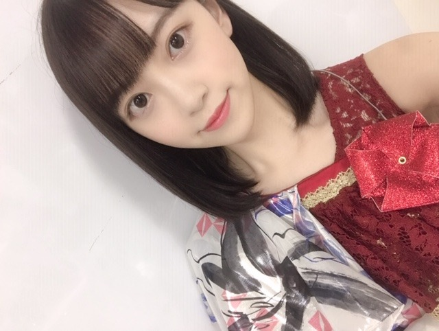

2019/0722Monいつから虫が怖くなったんだろう


カメラ向けるといつも犬みたいな顔してくる日奈子。
福岡ライブ無事、終わりました！
楽しかったなぁ☺︎
きてくださった皆さんの笑顔にたくさん元気をもらいました。ありがとうございます。
名古屋も終わり、残すところは大阪と神宮だー！

髪型珍しくストレートにしたの！
ストレート好きー？
絢音が楽屋の席となりだったんだけど、髪型見るなり
イイねってグッドポーズをくれました♡
いつも基本肯定してくれるし、髪型今日いいね！ってさらっと言ってくれたりするし人を傷つけない優しいところも大好きだし絢音みたいな人と付き合いたいなー！

よろしくねー！！
たのしもうねー！！
しおりと絢音と福岡ライブの楽屋でホットギミック について語り合えた。笑
真剣に観てくれてすきな作品って言ってくれて本当に嬉しいし挑戦して良かったって心から思えます
ありがとう☺︎
れなも、聖来も観てくれたみたい。
みんなありがとうー！！！
まだ上映中ですので是非✨

寝るのって大事。
笑うのって大事。
今日はたくさん友達と笑ったから
早く寝ます！昨日悪夢みたから今日はいい夢みれますように
みんなもね(^-^)
おやすみー
2019/07/22 21:06


コメント(434)
もぅ本当に本当にこの日を楽しみに頑張ってきたから次ゎなにを楽しみに頑張ればいいかわからないけど、またみんなに会えるために頑張るね
体調に気をつけてね❤️
風になびくストレートヘアは大好きです。
絢音ちゃんみたくなろうっと！（笑）
これからも未央奈ちゃんらしく
頑張ってくださいね！！！
その前に休める時は休んでください！！！
これからも応援しています！！！
ブログの更新ありがとうございます｡全国ツアーライブは順調ですか？神宮球場ライブが近ずいてきました。その後､上海公演２day'sがあるんですね｡
公式ニュースで知りました。『ジコチューで行こう』『インフルエンサー』『シンクロニシティ』 そして 『Sing Out！』は何度観ても感動します｡
乃木坂のパフォーマンスはレベルが高い｡楽曲のレベルが高い｡このふたつが融合している｡乃木坂の新しいかたちを楽しみにしています｡
では またね♪ 黒猫ジジ
ストレートばり可愛い！！大好き！巻いてたりするのも好きだけどストレートもめちゃめちゃ似合ってる〜〜❤︎❤︎きいちゃんとのツーショも最高⤴︎
今週末未央奈ちゃんに会えると思うとワクワクです♡個握楽しみにしてます！大好き！！
未央奈ストレートめっちゃ可愛い！！
どの未央奈も可愛いけど！！♡
全ツのときタオル気づいてくれてうれしかった！！
ストレート未央奈生でみれて超ハッピーでしたあ:！
ブログ更新ありがとう、癒されます。
福岡ライブ楽しめたのかな、良かったね。私は神宮の最終日に参加しますので、是非とも未央奈ちゃんとアイコンタクトしたいです‼
未央奈ちゃんのストレートヘアも勿論大好きですよ～
やっと梅雨明けみたい、暑くなっても良い体調で過ごしてくださいね。
乃木坂46と頑張ってるcuteでsmartな未央奈ちゃんを応援しています。
ツアー福岡お疲れ様！
行きたかった(>_<)
いや、心は行ってました！どーん
応援頑張ったよー！
ストレートの未央奈ちゃんももちろん可愛いよ！(≧∀≦)
姫は何をしても美しゅうございます。
ではでは
今日も素敵な１日を。
ストレート めっちゃかわいいです
ライブお疲れ様です
名古屋には、2dayとも参加出来ましたよ。凄くたのしかったです。大阪も、神宮も初日に参加します。
やっぱり、ライブでの未央奈が最高に素敵です。ホットギミックもみたよ。演技が上手いと思ったけど、やっぱり、スーパーアイドルだよ。梅雨が明けるから暑さに負けないように、頑張ろうね。
いい夢見れましたか？
睡眠 大事。
笑う事 大事。
やさしさの栄養。源。
「ホットギミック」心に、足跡が残る作品。
もう一回観るね。
残るは、大阪と神宮かあ。
足の手術が有るので行け無いよ、悲しい、、、。
心で応援しますね。
ストレート GOOD！
未央奈は未央奈のままで、
最高の笑顔を！
今朝はやや涼しく蝉の鳴き声が響いてます。
夏やね～(笑)✨
でも今日は休みやけど雨ところにより降る的な予報が出てるから、あと今日は真夏日に！
さてさて、福岡公演お疲れさまでした。
いつもやけど行けんくてごめんね。
行きたいけどなかなか行けないファンもおるん忘れないでほしいな！
一応ファンなんはファンなんで。
一応仕事真面目に忙しいんで！
って堀ちゃんに愚痴りごめんね。
そりゃああの臨場感楽しみたいのは当然でしょうからね✨
まあ仕方ないね。
それでもまだまだ乃木坂ファン続けるよ。
だって好きやからね☺
ストレートヘアー綺麗ですね✨
似合ってますよ✨
絢音ちゃんの自然な言葉は嬉しいね✨
あと日奈子ちゃんの元気な笑顔は疲れが吹っ飛ぶ
ね。と俺は思った☺
ホットギミックも観に行かねば。
みんな観に行って感想も言ってくれたらホンマ嬉しいね☺
仲間に言われたらより頑張ったって実感があるのではないかな？
ちなみに個人的には最後の写真も好きです☺
ホンマにお疲れさま☺
ではではまたね✨
体調には気をつけてくださいね✨
ほなね、堀ちゃん☺
ストレートかわいい！ツアー最後まで頑張ってね！
他のグループでも大成してる女優はいないけど一番活躍しそうだと感じたよ！
土屋太鳳より演技が上手いと思ったよ。
きいちゃん元気に復活できて良かったね
名古屋のアクシデントから心配してました
きいちゃんたしかに犬っぽい 笑
ストレート好きだよー
軽いウェーブも好きー
未央奈は髪型ころころ変えてくれるから
いろんな未央奈を見れて幸せです(^-^)
では、今日も1日楽しもうd(@^∇ﾟ)/ﾌｧｲﾄｯ♪
o(ﾟ▽＾)ﾉｼまたねぃ♪
ブログ更新、ありがとうございます♪
福岡でのライブ、お疲れ様でした‼︎
盛り上がったみたいで、良かったです♪
福岡といえば、美味しいものがたくさんありますよね〜
とんこつラーメン、もつ鍋、明太子。
お魚も新鮮で美味しいし♪
未央奈も、美味しいものにありつけたかな？
街を散策する時間はないかもしれないけど、いつもケータリングとかでその土地の名産品を味わえるみたいですもんね。
福岡の味を、1つでも多く楽しめていたらいいなって思います♪
堀北コンビの2ショットもいい感じ…‼︎
なんか、仲良し姉妹って感じ。
どっちがお姉ちゃんか分からないけど(笑)。
きいちゃんがワンちゃんぽいって、なんとなく分かる‼︎
人懐っこさ全開ですよね(笑)。
そして、ストレートの髪型の未央奈。
とってもいいですね‼︎
さらさら感が半端ない♪
未央奈は肌の透明度が高いから、髪型をストレートにすると、全体的な清潔感がさらにぐっと増す感じ。
いつもとまたちょっと雰囲気が変わりますね…‼︎
少し大人っぽくなるというか、聡明な美人アナウンサー、みたいなイメージです♪
髪型を変えたり、洋服の系統を変えたり。
様々な変化で、いろんな未央奈の表情を見せてくれると嬉しいです♪
さて、真夏の全国ツアーもあと2ヶ所。
体調に気をつけて、頑張ってください‼︎
ではでは、また。
今日も未央奈にとっていい1日になりますように♪
自由の彼方よかったよ！みおなと白い羽はめっちゃ似合ってた！白いドレスも清楚でよかった！
とにかくかわいすぎました！
もちろんストレート似合ってるよ！！！
握手会会いたいな〜！
虫を知ってからだと想う～
福岡公演1日目だけ参戦しました！未央奈ちゃんのミュージカルコーナーが2日目だったから観られなくてすごくショックだったけど、ステージとトロッコから近い席で、肉眼で未央奈ちゃんのパフォーマンスをしっかり観たのが初めてだったから本当に幸せでした…(T_T)素敵なパフォーマンスをありがとう！
切ない儚げな表情も、気迫溢れる目力の強い表情も、キラキラの笑顔も、乃木坂の衣装がめちゃめちゃ似合うところも、メンバーと仲良さげにはしゃいでいるところも全部に惹かれて、未央奈ちゃんのことがもっと好きになりました！
1日目のポニーテールも最高だったし、写真のストレートもとっても可愛い♡堀北コンビ、ライブを観て特に好きが増した2人だからツーショット嬉しい！すずほりはエピソードから可愛いの極みで癒されます⸜(*ˊᵕˋ*)⸝
ホットギミックが近所の映画館で公開終了してしまってロスに陥っています…DVDが発売されたら何回も見返したいな︎☺︎
大阪と神宮公演も頑張ってください！
福岡ライブお疲れ様。これからもっと暑くなるけど体調管理に気をつけて大阪、神宮も頑張ってね。
ストレートヘアとても似合っていて可愛いね。
いい夢見て笑っていられる毎日を過ごせると最高だよね。僕も未央奈ちゃんみたいにポジティブに考えるように心掛けようと思います。
真夏の全国ツアーは二会場目となります福岡公演。二日間お疲れさまでした〜。これで全国ツアーも折り返し。続く大阪と神宮のライブもがんばってください。
さらさらストレートヘアもよくお似合いです。ライブで揺れる髪も魅力的。
そして『ホットギミック』を観たメンバーからいろいろ感想もらえて嬉しいことですね。力になります。
たくさん眠っていっぱい笑って健やかにすごしましょう。
ではまたコメントします。今日もよき日でありますように。
さらばだ、また会おう！（気球に乗って去りぬ〜）
堀ちゃんお昼ご飯何食べるのー？
福岡お疲れ様〜！
ストレート好きーーー！！！
でも夏は女子がお団子とか
アップにしてくれるからそれもいいよねっ♪
みたらしとかアンコとか美味しそう
ニコッて笑いながら寝るといい夢みられる
って言われてたけど
あれってウソっぽいなー笑
今夜はいい夢みられますよーに
ホントに楽しかった!
ありがとうm(_ _)m
ストレートかわいかった〜
一瞬誰だ?て思ったけどモニター見て感激!!笑
でもみおなの外ハネには敵わないかな?笑
更新ありがとう〜
ストレートの髪型素敵です^_^
福岡、ステージで輝いていました
大阪でもタオル掲げて応援します(^_-)
ホットギミックで見せたふとした表情が
とても印象に残っています、次も楽しみです。
一つ聞いてもいいでしょうか
未央奈さんはトップアイドルなのに
何故にこんなにブログ更新してくれるのでしょうか？
季節柄お身体をご自愛ください
絢音ちゃんはイケメンな性格だね！
チャァオ～～!☆彡
みおちゃん❕笑顔・・・
でもさぁ～～～～⤴️⤴️⤴️
可愛いぃ～～～⤴️⤴️メンバーさんや～～～～⤴️⤴️⤴️・・・
可愛いぃ～～～⤴️⤴️後輩メンバーの～～～⤴️⤴️
ひっつき虫は～～～⤴️⤴️
めっちゃ可愛いぃ～よねぇ～～⤴️⤴️❕❤️❤️❤️❤️❤️笑顔
☆大人しい、おすまし！より☆彡
最高です！
ホットギミック観たよ！
私は動的な映画が好きなのですが、本作にも動的なものを感じました。良かったです。10代の恋心の移り変わりが非常にリアルに描かれていた。傑作だし、自分はこの作品が好きです。
次は天気の子だな。
福岡公演行ったよ‼︎‼︎
未央奈がトロッコで近くに来たとき
タオルとかペンラとかでアピールしたよ！
気付いてもらえたかなー
今回初めてライブ行って私もあの舞台に立ちたいって強く思いました‼︎
ストレートヘアー可愛い！！
髪色も好きだなぁ…
やっとコメントできる！
名古屋と福岡のライブお疲れ様でした！
行きたかったです…でもね！神宮1日目行くのでレス貰えるように頑張ります！！
ストレートの髪可愛すぎー
未央奈さんはストレートでもどっちでも似合ってます！
でも個人的にはストレートが好きです
そしてホットギミック見ました！
私まだ中学生なので結構刺激が強かった部分もあったけど、
すごい共感する所もあって、
「自分に価値があるかなんてわからない」
っていうセリフがすごくすごく胸に響きました
私も何度も思ったことがあるんです。だからすごく勇気や自信を貰えたし、ホットギミックという素晴らしい作品に出逢えたのは未央奈さんがいてくれたからなのでほんとに感謝してます。
未央奈さんに出会えてよかったー！
初主演であんなにも堂々と演技できるのはすごいなって思いました！堀未央奈っていう感じではなくてもう成田初になってて、これから女優としての堀未央奈を見るのがとても楽しみになりました！語彙力なくてごめんなさい笑
長々と書いてすいません。
8/10握手会第5部に行きます！
楽しみです！
ばいばい！がんばれ！
大人になると虫が怖くなりますね～
福岡ライブお疲れ様でした！！
とっても充実した様子で安心しました✨
次シングルで日奈子ちゃんと一緒ですね！
日奈子ちゃんの犬の表情は安心します♪笑
ストレート髪すっきりしてラブリーです！
絢音ちゃんを沢山見習いたいと思います♡
しおりちゃんの感想も聞いてみたいです！
ホットギミックとっても素晴らしいです☆
美肌の虫刺されには気を付けて下さいね！
虫にとっても魅力的な美肌なのですよー♡
あいみょんさんの漂白でも白くなりそう！
今回のブログ写真で眠れなくなりそう～☺
コメントする